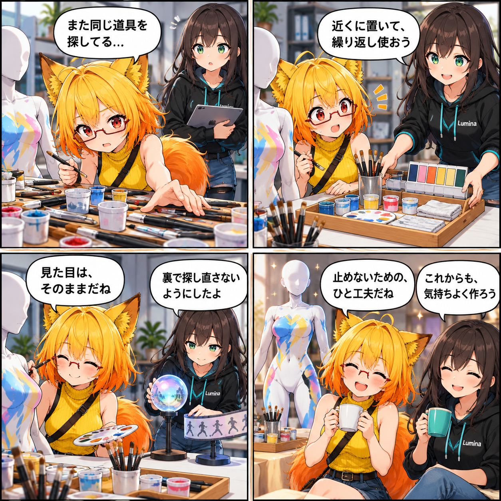

止めないために、ため込まない日
VRASの見た目と操作感を保ちながら、読み込み、環境、Surface Paint UV、VASシーケンスで繰り返していた探索や一時データの生成を見直しました。

同じ仕事を、何度もやり直さない
最適化というと、新しい見た目や派手な数値を想像しがちです。今回はその前に、必要な参照や準備済みのデータを適切に使い回し、同じ場所を何度も探したり、一時データを作り直したりしない経路を整えました。
対象はVAB/VBGの読み込み、環境光プローブ、Surface Paint UV、そしてVASのオブジェクト・VACトラックです。機能の意味や表示結果を変えるためではなく、今ある体験を保ったまま、裏側の反復を減らすための改善です。
読み込みと環境を、準備して待たせない
VAB/VBGの読み込みではテクスチャ準備の流れを整理し、環境側では散在するプローブの参照を扱いやすくしました。必要になるたびに同じ情報を探し直すのではなく、安定して使えるものは保ち、必要なときに取り出せるようにしています。
Surface Paintとシーケンスも、続きから使う
Surface Paint UVでは非同期処理とデータ変換の経路を見直しました。VASシーケンスでは、オブジェクトやVACトラックの評価に使う参照・バッファを再利用し、補間やマテリアル適用で不要な生成を抑える形です。
どちらも利用者が触れる入口は変えず、処理の中で同じ準備をため込まない方向へ寄せています。
変化を守るテスト
今回の経路には最適化用の回帰テストも追加しました。読み込み、環境、Surface Paint UV、オブジェクト・VACトラックで、結果を保ちながら内部の扱いを変えられることを確認する土台です。測定値や実機での結果は、今回確認できた事実としては掲載していません。
ほかにも進んだこと
VASのキーフレーム取得と環境同期、シーンとVolume設定、VR描画・常駐処理、ライト選択とカメラ移動の分離、lilToon標準Variantの先行Warmupも同じ集計期間に更新されました。
4コマの裏話
今回は、道具を増やす話ではなく、同じ道具をすぐ使える場所に置く話です。画面の見た目を変えずに、制作が滞らないよう支える今回の最適化を、静かな作業台に置き換えました。
まとめ
VAB/VBG読み込み、環境、Surface Paint UV、VASシーケンスの反復処理を見直し、品質を守るための最適化と回帰テストを整えました。
本日のひとこと
気持ちよく作り続けるために、裏側も片づけておこう。